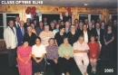
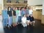
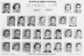
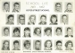
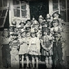
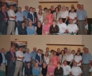
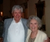
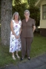

SOUTHERN SL REUNION (ALL FROM SL INVITED)
We are planning a SL reunion from March 26-April 1, 2, or 3, 2017. For those who have RV's, you can book and stay at the Lake Louisa State Park in Clermont, FL. For those of us who do not, Lake Louisa has a limited amount of 2 bedroom, 2 bath cabins (which you can share, if you wish). We plan to make it a 5-7 day event so that everyone can catch up without worrying about a time line and gives us an opportunity to talk to more people. This is open to ALL Saranac Lakers so invite anyone you know who might be interested in attending. Please contact me (Judy
Bickford) at jebickford@yahoo.com or Karen Landry Woods at harley03@tampabay.rr.com, if interested. The phone number for reservations at Lake Louisa State Park is 800-326-3521. The park fills up fast and 6 months out, so make your reservations early!!!!!
CLASS OF 1970 15th REUNION PIC
CLASS OF 1970 20th REUNION PIC
2008 REUNION PICS
HERE ARE THE PICS FROM THE CLASS OF '68 - ST PIUS AND SLHS
1968
SARANAC LAKE CLASS OF 1978'S 30th REUNION - 2008 -
CHECK OUT THE 40's REUNION OF 2004
CLASS OF '72 REUNION GROUP PIC -- 2007 --
Front Row from left: Bob Richter, Pam Fobare, Suzanne Snyder, Paula Willette, Eileen Mose, Valerie Whitney, Terry Morgan, Marie Johnson, Anne Baxter, George Campion
Second Row from left: Pete Dukette Peg McKillip, Lynn Ely, Michele Ryan, Mya Strack, Jean and Jane Kern, Bonnie Ohmann, Vickie Yell, Lee Demerse, Chris Rottner, Don Tummons, Greg Mace
Third Row: Roger Willete, Gary Collela, Tom Scheefer (Sheila Betters (hidden behind Kathy Branch,Betsy Sageman, Dick Moon (behind Betsy), Kevin Martin, Ivan Bickford, (behind Ivan – I have no idea) Hugh Mcgill,(Dean Martin behind Hugh) mark patnode, Terry Gauthier, Jim Farmer
Back Row: Gar Munn, Fr. Pat Ratigan, Mark Fuller, Nelson Rose, Billy Allen, John McAndrew, Chuck Martell, Jerry Fletcher
SLHS CLASS OF 1961 REUNION 2006
CLICK ON THUMBNAILS TO ENLARGE
CLASS OF 1955 --- 50th REUNION PICS -- 2005 --
CLICK ON THUMBNAILS TO ENLARGE
L to R, BOTTOM ROW: Marcia Duprey Doty, Rosemary Annis Hough, Rita Gardner Pickreign, Nancy Wojiak, Demars, Marie Brooks Spencer, Beverly Soper Demerse
2nd ROW: Joan Murray Byrnes, Pat Dyer Parslow, Rosemary Branch Glover, Nancy Lamay Carlin, Gerry Shore, Rouse Fountain, Pat Kent Abare
3rd ROW: Bill Demerse, Frank Turner, Ginger Gowan Hughes, John Pickreign, Margaret Darrah Hall, Joan Kains Howell, Margie McNicholas Howard, Jack Fogarty, Emily St. Clair Fogarty, Elizabeth Buckley Pebbles, Beverly Donaldson Baker
4th ROW: George Wilson, Jim LaFountain, Marjorie Stalbird Fierst, Ken Hoyt, Anne Mitchel Culver, Jim Quigley, Karen Cogan Woods, Bill Daunais, Jim Cronin, Paul Parsons, Bob Ketelson, Ken Ward, John Safford, Dan Carlin, Jim Abare

2005
The class of 1970 from Saranac Lake Central high
school recently gathered for its 35th reunion. On a
chamber-of-commerce day at Mt. Pisgah, we ate a lot of
food and shared alot of memories.
What? You were in the class of '70 and you missed it?
Well we missed YOU! Let us know where you are so we
can contact you for the next one! Send an e-mail
address, mailing address or phone number to Rose
Anderson: cosmo@primlink1.net


WHEN WE WERE VERY SMALL
(I NEED HELP FILLING IN SOME OF THESE KIDS NAMES)
TEACHER - MRS. ELDRIDGE
Front row left to right
Linda ?, Betina Rushlaw, Eileen Bristol, Kathy Munn, Brenda Ward, Carol Pickreign, Jackie Beaney
Middle row left to right
Peter Smith, Kenny, ?, Penny Svocak, ?, Laurie Donaldson, Monroe Gladd, Pat Doyle
Top row left to right
Gerald Shore Jr., Peter Camelo, Steve Reynolds, Bill Johnson, John Mandigo, Michael Chabot, Michael Gardner
1964 - 1965 RIVER STREET SCHOOL KINDERGARTEN -- FROM PENNY SVOCAK
 RIVER STREET KINDERGARTEN 1964 - 1965
RIVER STREET KINDERGARTEN 1964 - 1965
Front Row left to right
Cindy Wells, Laurie Kent, Tina Gladd, Brenda ?, Gail Stiles, Ellen St John, Penny Svocak
Small second row behind front row left to right
John C, Brian Battistoni, Rodney Dewey, Clark ?, Keegan Riley
Third row left to right
Jack Murphy, Timothy ?, Robert Cole, William Hickok, Robert Willette, Andrew Fletcher
Top row left to right
Robert Prevost, Duane Pond, John Kingston, Mrs. McKillip, Sam Coullier, Michael Chabot
1966 - 1967 BROADWAY SCHOOL SECOND GRADE - Mrs. McKillip's class - THANX TO PENNY SVOCAK
BROADWAY SECOND GRADE
THIS SHOT OF THE 1964 RIVER STREET SCHOOL FIFTH GRADE CLASS WAS SUBMITTED BY LOREN DURANT
 RIVER STREET ELEMENTARY
RIVER STREET ELEMENTARY
CLICK THUMBNAILS TO ENLARGE
CAN YOU IDENTIFY THESE FACES? RIVER STREET SCHOOL 1961-1962 GRADE SIX

RIVER STREET SCHOOL 1961-1962 GRADE FOUR


HERE'S THE SAME CLASS DURING KINDERGARTEN 57-58

1961 - 1962 BROADWAY SCHOOL - FIRST GRADE -- FROM DAVE MARTIN
 BROADWAY FIRST GRADE
BROADWAY FIRST GRADE
Ron Heath, Leslie Hoffman, Dave Swett, Dave Martin, Karen Reed, Louise Wilson, Mrs. Wilson, Jean Bellaire, Stan McGrain, ?? , patty farrington
SLHS CLASS OF 1960

MR AND MRS GALLAGHER, OUR FAVORITE COUPLE

BEST FRIENDS, BARB EMPEROR AND PAT DAUNAIS REUNITED

SEND IN YOUR CLASS REUNION SHOTS AND NEWS